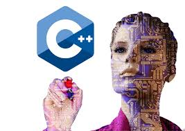

 С++ — кроссплатформенный язык семейства C с расширенными функциями. Огромное количество программистов пишут на нем код, делятся библиотеками и шаблонами, отвечают на вопросы новичков.
Где используют. Чаще всего на С++ создают операционные системы, драйверы и утилиты. Делают популярные десктопные приложения серий Adobe и Office. Из-за высокой скорости и производительности C++ используют для разработки компьютерных игр. Например, на нем написан популярный движок Unreal Engine.
Сколько платят программисту. В регионах разработчик на C++ зарабатывает от ₽50 тыс. до ₽150 тыс., в Москве — от ₽100 тыс. до ₽250 тыс. Зарплата зависит не только от города, но и от сферы — в геймдеве можно заработать больше, чем в разработке системных приложений.
Зачем изучать.C++ плохо подходит для решения простых «домашних» задач, но с него можно начать обучение языкам, чтобы понять их структуру и принципы. Если решили изучать, запаситесь терпением — с С++ в полной мере работает принцип «тяжело в учении — легко в бою».